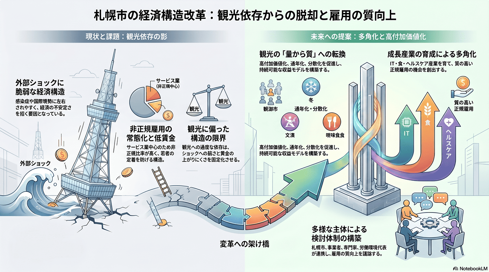

産業・観光・MICE
10年以内
観光・サービス業依存と雇用の質
好調な観光の一方で、雇用の質と景気変動への弱さが課題となる。

背景
観光は札幌の強みだが、感染症・災害・国際情勢に左右されやすく賃金も上がりにくい。観光に偏った構造はショックに弱く、若者の定着も妨げる。
事実
- 観光産業は好調な一方で、サービス業中心の構造ゆえ非正規雇用の比率が高い。
- 正規雇用の機会を増やすための産業構造の見直しが求められている。
解釈
観光依存はショックに弱く賃金も上がりにくい。強みを活かしつつ産業を多角化する必要がある。
提案
- 観光の高付加価値化（量から質へ）と通年・分散化。
- 観光以外の成長産業（IT・食・ヘルスケア等）の育成による多角化。
検討体制・メンバー
札幌市経済観光局と観光関連団体が中心。検討会には観光・宿泊・飲食の事業者、地域経済の専門家、文化・食・MICEの担い手、労働環境の代表を加え、量から質への転換と雇用の質向上を同時に議論する。
AIノート
AIの貢献度は中。需要予測による混雑分散・ダイナミックプライシング、多言語対応、データに基づく高付加価値な観光体験の設計に役立つ。産業の多角化そのものは投資と政策の問題で、AIは観光の高度化を支える。